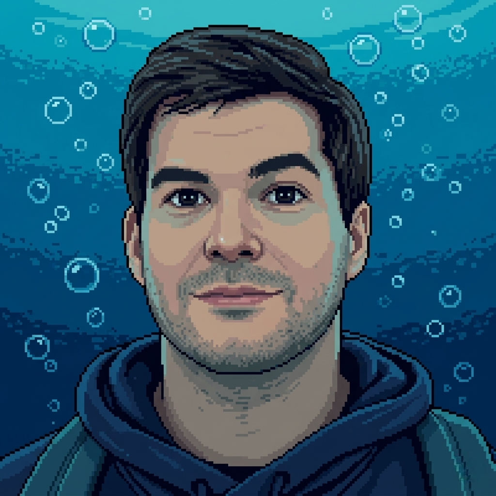

SOBRE MÍ
EL CREADOR DEL
ABISMO
Detrás de la oscuridad y la inmensidad de ABYSSEA se encuentra Iñigo, un desarrollador independiente con una pasión obsesiva por las profundidades inexploradas y la tecnología inmersiva.
Tras años trabajando en la industria, decidí aislarme para crear algo genuino. Un juego que no te lleva de la mano, sino que te arroja al vacío y te obliga a sobrevivir. Mi objetivo es que sientas el mismo respeto y fascinación por el océano que siento yo.
SÍGUEME EN REDESUNA VISIÓN
INDEPENDIENTE
ABYSSEA no es el producto de un gran estudio corporativo, sino la visión inquebrantable de un único desarrollador. Diseñado, programado y esculpido en solitario para ofrecer una experiencia inmersiva sin compromisos ni presiones externas.
Cada criatura, cada línea de código y cada sonido del abismo ha sido meticulosamente creado con la pasión de demostrar que los mundos más inabarcables pueden nacer de la dedicación absoluta de una sola mente.
SOLO DEV PROJECT
Desarrollo Independiente